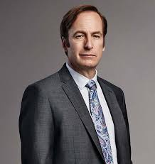

Saul Goodman

- Cicero, Illinois 12 de Julio de 1964
- Calle George Washington Nº 435
- ALbuquerque, 87101
- (505)842-5662
- SaulGoodman_attorney@yahoo.com
Formación académica
1994-1998 - University of American Samoa - Grado en Derecho
Experiencia laboral
- Artista callejero (1985-1992)
- Repartidor del correo en HHM (1992-1998)
- Abogado de oficio (1998-2002)
- Abogado asociado en Davis & Main (2002-2002)
- Abogado de ancianos en Wexler & McGuill(2002-2003)
- Vendedor de teléfonos móviles en CCMobile (2003-2004)
- Abogado en defensa criminal (2004-Actualidad)
- Mánager en Ice Station Zebra Asociados
Idiomas
- Inglés - Nivel alto, lengua materna, especializado en términos legislativos y empresariales
- Español - Nivel medio, hablado de forma habitual dado el gran número de personas que lo hablan en el estado de trabajo
Aptitudes
- Buena capacidad de captación de clientes y relaciones públicas
- Gran capacidad de convicción y argumentación precisa
- Uso cotidiano de la improvisación para solucionar pequeños problemas
- Amabilidad y buen trato, sobre todo con ancianos